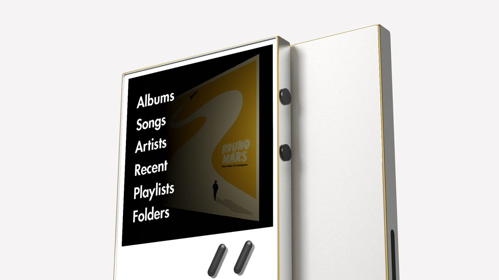
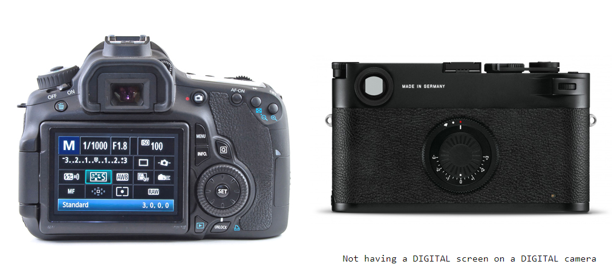
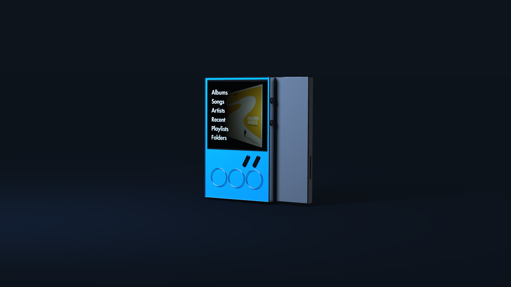
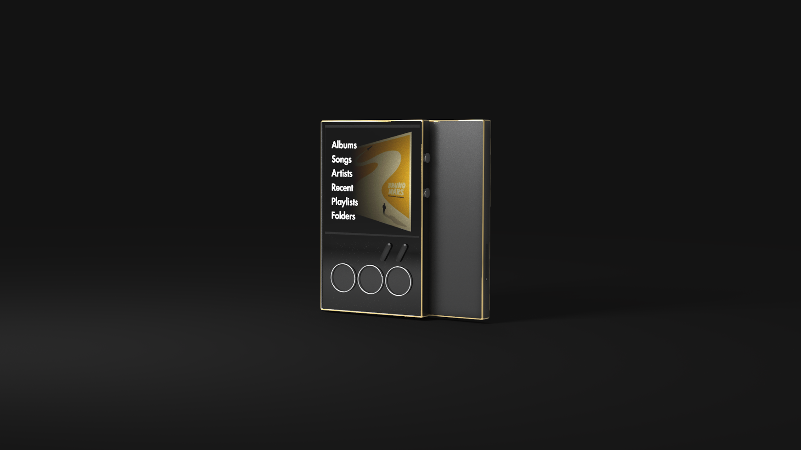

There is some aspect of the product which is directly linked to it’s usability that makes the owner attached to the product.

has copyrighted music.
Inspiration
While Nikon and Canon make exceptional professional cameras and are absolutely necessary where performance is preferred over everything, but most of the users of cameras made by Leica and Fuji who make cameras not strictly for professional market but for the luxury market where people like the process and the engagement wit the product while photographing rather than having the camera out of the way and focus on the task at hand like Nikon & Canon.

We use our senses to interact with everything, they constantly give us feedback of what we are doing.
Our sense of touch is somewhat underused when it comes to traditional touchscreens, and highly underused when using buttons. This is a working prototype of how the user interaction in terms of a scrolling list would work.
Renders

